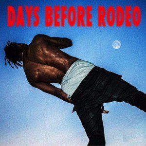

Travis Scott
1. Rodeo
| Track List |
| 1. Pornography |
| 2. Oh My Dis Side |
| 3. 3500 |
| 4. Wasted |
| 5. 90210 |
| 6. Pray 4 Love |
| 7. Nightcrawler |
| 8. Piss on Your Grave |
| 9. Antidote |
| 10. Impossible |
| 11. Mariah I'm Drunk |
| 12. Flying High |
| 13. I Can Tell |
| 14. Apple Pie |

2. Days Before Rodeo
Drugs You Should Try
3. Birds in the Trap Sing McKnight
Coordinate
4. Owl Pharoh
Hell of a night
5. Astroworld
Not out yet :/
Jacques Webster, better known as Travis Scott (previously stylized as “Travi$ Scott”) is a rapper and producer from Missouri City, Texas located within the Houston Metropolitan area. Scott began producing and releasing beats via MySpace at 16. He moved to Los Angeles after dropping out of The University of Texas at San Antonio following his sophomore year. With some help of fellow southern rapper T.I., Scott signed to Epic Records and T.I’s own label, Grand Hustle. After, he acquired the number of Kanye West’s engineer, Anthony Kilhoffer. With Anthony’s help, Scott was able to co-produce tracks on G.O.O.D. Music’s debut album Cruel Summer. After his appearance on the label’s album, Travis signed to G.O.O.D. Music under a producer contract and along with West’s help he released his debut solo mixtape Owl Pharaoh.
He released Days Before Rodeo on August 18, 2014, anticipating the release of his debut album entitled Rodeo, which was released September 4th, 2015.
Scott released his highly anticipated Sophomore album Birds in the Trap Sing McKnight on September 2, 2016 after debuting it that morning on his .WAV Radio show on Apple’s Beats 1 platform. This album was an Apple Exclusive and was available exclusively on Apple Music for a week before full-rollout on all other marketplaces and streaming services.